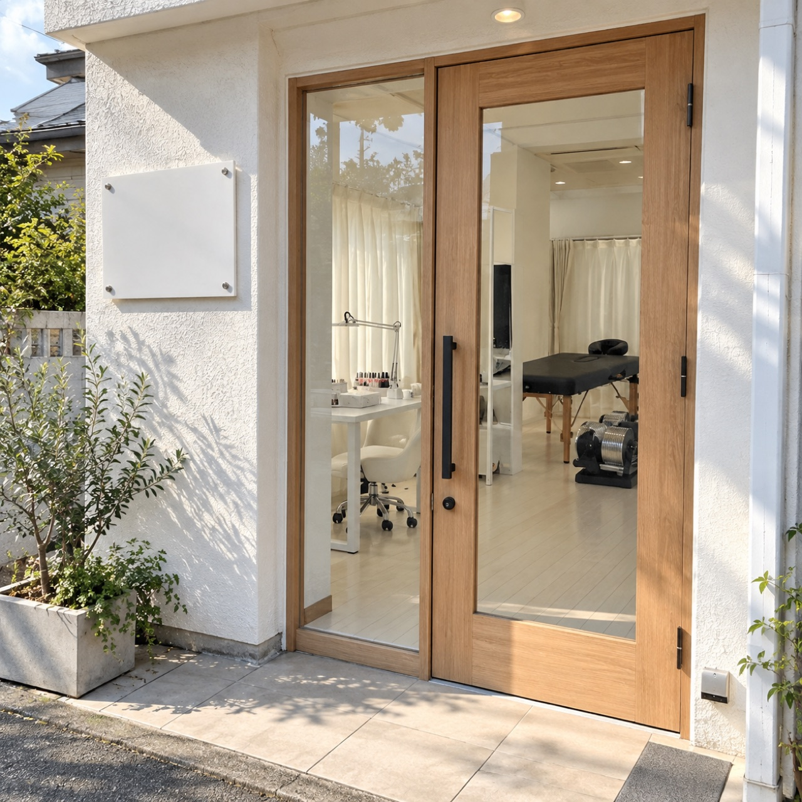
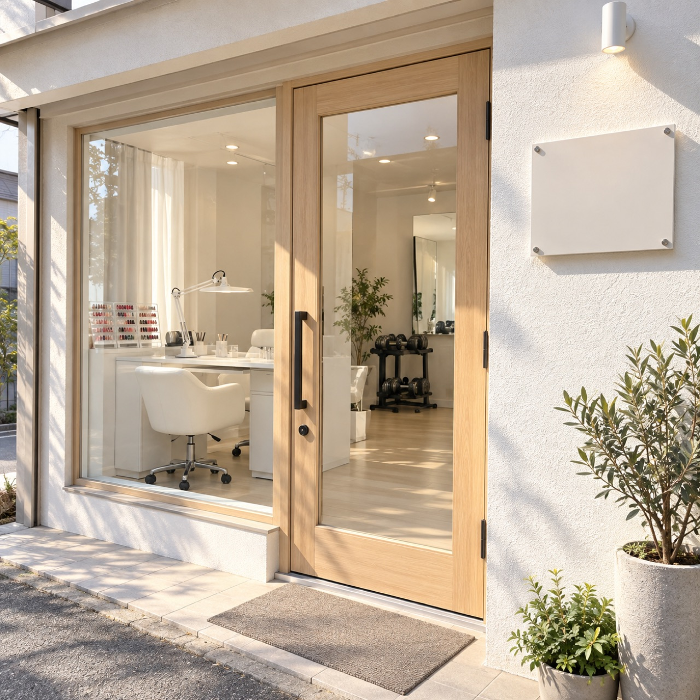
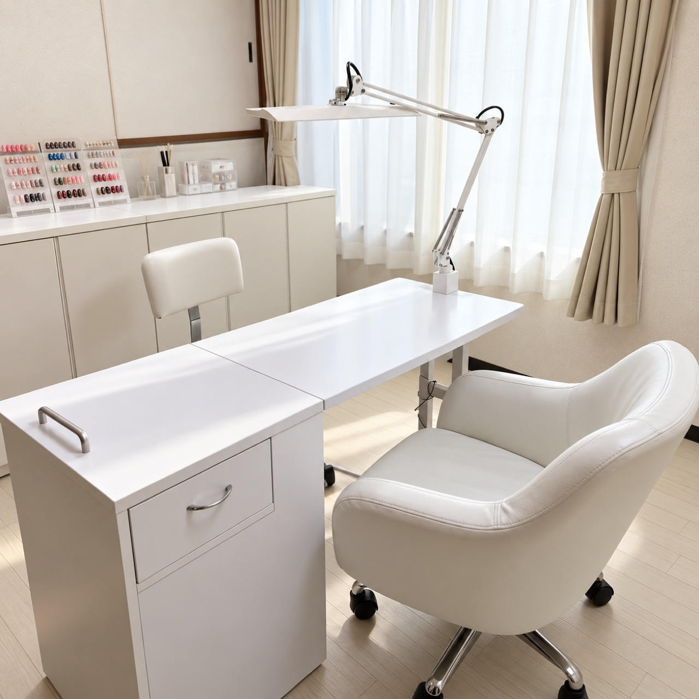
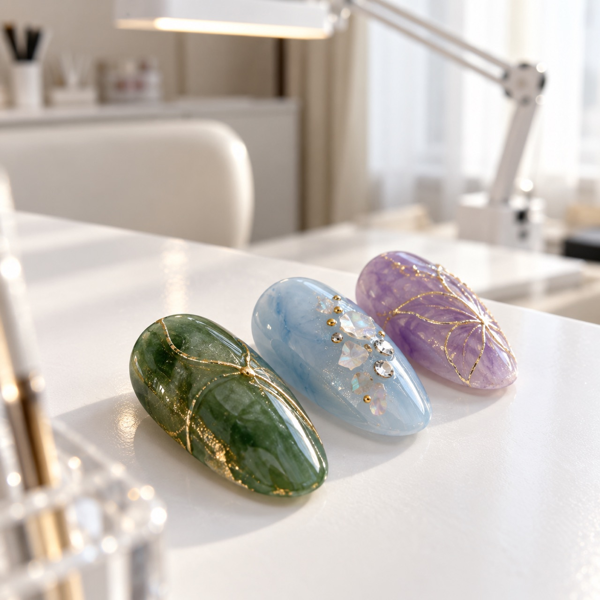
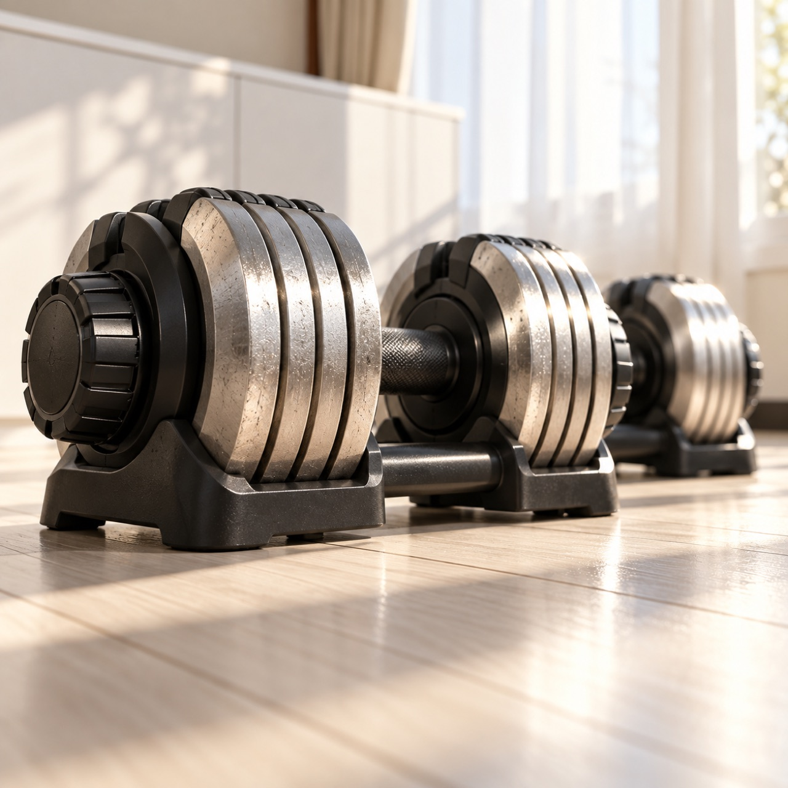
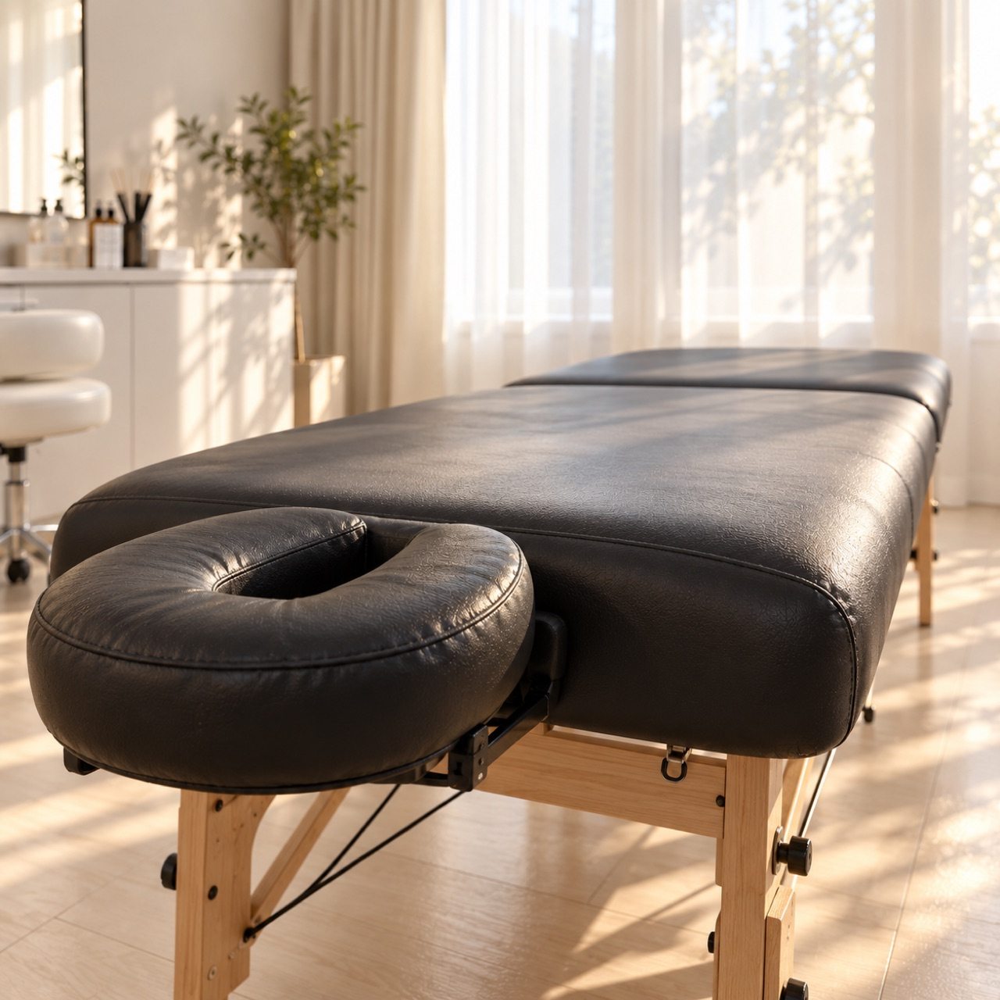
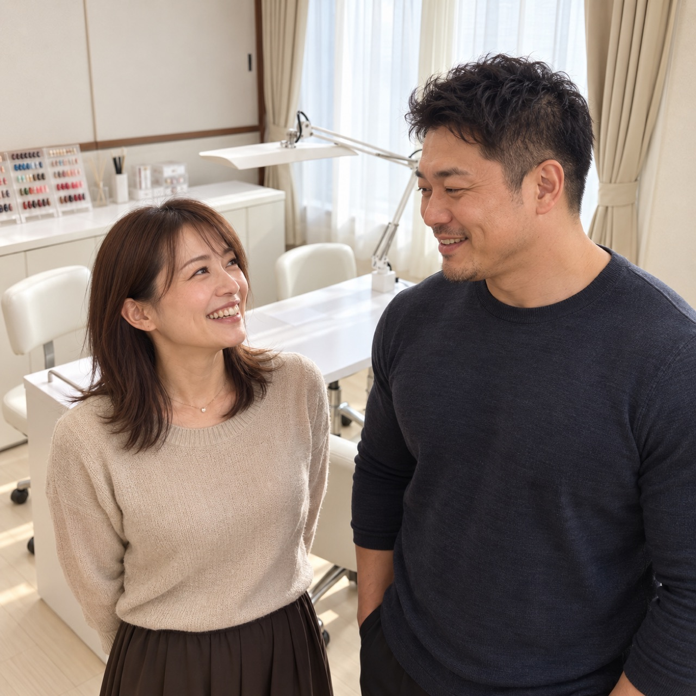

C1・起実物写真画角：アイレベルよりやや低い外観ミディアム。ガラス扉越しに施術ベッド＋ダンベルラックが同時に見える構図＝1カットで複合施設が伝わる
テロップ
多摩市 豊ヶ丘に、こんな場所ができました
ナレ案
「──こんなところに、ネイルサロンと、パーソナルジムが。」
ネイルサロン × パーソナルジムの複合施設／東京都多摩市豊ヶ丘1-3-18
本ページは静止画ベースの構成案までです。動画化（Higgsfield / Seedance 等での実際のAI動画生成＝費用が発生する工程）はまだ着手していません。このストーリーボードのご確認・ご承認後、動画化に進むかどうかは別途あらためて確認します。
対象：youtu.be/dbl4vxwPLws（フィットイージー「やりたいこと全部ここで」篇と推定）
正直な限界の申告：YouTube動画本体のフレームは直接確認できておらず、タイトル・コンセプト・広告ジャンルの定石から演出パターンを推定したものです。コマ単位の実測ではありません。
| 要素 | 参考動画のパターン | ORDOgniへの転用 |
|---|---|---|
| コンセプト | 「1つの場所に複数の『やりたいこと』が揃っている」発見・驚き | 「ネイルサロンとパーソナルジムが同じ場所に」という訴求と一致 |
| 導入 | 外観・入口からの期待を煽るカット | 外観カット（新素材5・7）をオープニングに |
| 展開 | 次々に機能ゾーンが現れる「発見のカット割り」 | ネイル→ジムを交互に見せ、人物カットで両方を1枚に収める |
| 人物 | 自然な笑顔で「来たくなる」感情を作る | 夫婦の掛け合いカットを感情のピーク（転）に配置 |
| 締め | ロゴ・キャッチコピーで着地 | ORDOgniロゴ＋住所＋一言コピー |
起承転結で構成。「複合施設である発見」→「両事業の質を緩急つけて見せる」→「夫婦の顔で感情のピーク」→「店名・住所で着地」。
画像はすべて受領済みの実物写真です（AI生成の作り直しはしていません）。表示されているテロップは現時点での案です。

C1・起実物写真画角：アイレベルよりやや低い外観ミディアム。ガラス扉越しに施術ベッド＋ダンベルラックが同時に見える構図＝1カットで複合施設が伝わる
多摩市 豊ヶ丘に、こんな場所ができました
「──こんなところに、ネイルサロンと、パーソナルジムが。」

C2・起→承実物写真画角：カット1と対になる角度違いの外観。ドアを少し開けたアングルで「招き入れる」感じ
ネイルサロン × パーソナルジム
「一つ屋根の下に、二つの『好き』が揃う。」

C3・承実物写真画角：斜め引き。デスク・椅子・照明アームのレイヤーで奥行きを出す
丁寧な時間を過ごせるネイルサロン

C4・承実物写真画角：真上〜斜め上からのマクロ物撮り。手前ピント・奥ぼかし。空間の「引き」→作品の「寄り」で緩急
一つひとつ、丁寧に

C5・承実物写真画角：床に近い低い位置からの見上げアングル。ネイルの「静」からジムの「動」への切り替え＝ここで「ジムもあるんだ」を再確認させる
本格的なパーソナルジムも

C6・承実物写真画角：ベッド全体が入る引きの構図。動きの多かったC5から一度呼吸を置く「間」の役割
ゆっくり、整う時間

C7・転実物写真（要確認）画角：バストアップの自然な笑顔の会話ショット。背景にネイルカラー棚＋ダンベルラックが同時に写り込む構図をそのまま活用＝このカット1枚で「夫婦経営」と「複合施設」を同時に伝える、v5構成の核
夫婦二人で、アットホームに
「奥さんはネイル、旦那さんはジムを。夫婦で営む、あたたかい場所です。」
画角：C6と同系。ロゴ・住所テロップを乗せる余白（画面下1/3）を確保
ORDOgni（オルドーニ）／東京都多摩市豊ヶ丘1-3-18／ネイル × パーソナルジム
この写真は背景にネイルカラー棚とダンベルラックが両方写り込んでおり、店内で撮影された本物の写真である可能性が高いと判断しています。
上記1点をご確認いただいてから最終素材として確定します。